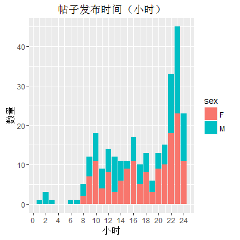

他们征友（婚）时，他们征什么？
有道是年年岁岁花相似，岁岁年年征友人，征友贴一茬又一茬，简历投了一波又一波，为什么迟迟得不到回复？当男女征友时，他们到底在征什么？你真的看懂征友贴了吗？你还在为你屡屡投条未收到答复而苦恼吗？你还在为简历被女神刷掉自怨自艾吗？
本文以北邮人论坛征友贴为主要原料[1]，使用独家秘制八卦手法，希望从中发现一些有意思的事，本着娱乐至上，看热闹不嫌事大的原则，有些观点和分析请观者自行甄别，图例中F(emale)代表女生，M(ale)代表男生。
一、总体情况
首先是大家喜闻乐见的我邮男女比例，如下图所示，
我从论坛总共扒拉下来274个帖子，其中女征男148个，男征女126个，男女比例大概是1:1.17，好像并没有想象的那么悬殊。从年龄上看征友的主力军还是80后，如下所示，

80后约占66%，几乎是90后的两倍，且男女比例基本持平，是啊90后都26了，80后压力好大啊，想静静。值得一提的是90后征友者，女生明显比男生多。从平均年龄上来看，男生为27.9，女生为27.7，女生稍小。整个年龄区间主要集中在26 ~ 30， 女生中26、27岁的占了四分之一。

下面再来看看大家的发帖时间吧，

可以看到，帖子的发布时间集中在晚上23点左右，这可能是和论坛的十大机制有关系，大家选在这个点发帖，目标是为了十大。有几个帖子是在凌晨发的，但都是男征女，看来女神们都很注重养生啊，不熬夜。一周七天，周一、周二和周末两天帖子数稍多，中间三天稍微少点，总体差别不如上面时间那么明显。
二、征友关键词
接下来，重点来了，回到开头我们提出的问题，当男女征友时他们在征什么？
1、征友者说
我选取了男女征友者都提到的高频词，列举如下，

除了“工作”、“生活”、“喜欢”、“性格”、“身高”这些千篇一律的词，还有一些有趣的词。不知道大家注意到那个扎眼的“山东”没，因为身为山东人，对“山东”这个字眼比较敏感，这么多词只有一个关于地域的词汇就是“山东”，我很纳闷为什么“山东”出现在这里，山东人那么多没对象吗，我统计了下，平均约12%的帖子提到了山东。我不知道是山东人征友的比较多还是山东人比较受征友者的欢迎，不管怎样我就当成后者吧，哈哈。大家经常议论的“京户”也出现了，约有14%的帖子，不算很多。另外“感情经历”都是双方比较重视的一点，其他的大家自己看看吧。
2、男生vs女生
都说”男人来自火星，女人来自金星“，看过了男女生共同的话题，接下来看看两个来自不同星球的生物有哪些差别呢。

男生说的可以总结为：好“哥们”生于“86年”、“88年”，“收入”不错，有“户口”，有“能力”，“技术”过硬，爱好“羽毛球”、“游泳”、“健身”等，身体“健康”，寻“通情达理”，身高“160”以上妹子，插一句男生那么多都喜欢“羽毛球”吗，感觉没那么多啊。
女生可以总结为：单位“姐姐”、多年“闺蜜”生于“87年”、“90年”、“91年”，“活泼”可爱，性格“独立”，“喜欢运动”，会“做饭”，喜欢“孩子”，寻觅人“在北京”，“有责任”、“有上进心”，成熟“稳重”，“170”、“175”以上汉子，“非诚勿扰”，“哈哈哈”。
是的，我们又看到了万恶的“175”，可以看到男生更多的提到表示自己客观实力的字眼，女生则比较喜欢用一些主观一些的词汇。男生对女生最多的要求是“通情达理”，女生对男生最多的要求是“有责任”。
3、80后vs90后
是的我又带节奏了，都说“80后是XXX的一代，90后是XXX的一代”，那么这两代人在择偶观上有没有差别呢？
80后男生可以总结为“寒窗苦读十余载，一朝成名在今朝，高头马，黄金屋，良人你咋还不来”，90后男生则是“世界那么大，未来那么远，唯一不变的就是寻觅你的心，亲爱的，你在哪里”。

80后女生“爱过，痛过，笑过，哭过，姐累了，想结婚了”，90后女生“爱哭爱笑，爱美食爱运动，一直在路上，我要我自己的未来”。
很明显，80后和90后说的话还是挺不一样的，80后可能更“现实”了。不过我不认为这是出生年代造成的，我更愿意把这看成年龄大小的差别，或者更残酷点，成熟与否的区别，就像现在的自己和20岁那年的自己相比，确实有那么一点不同。
至此，相信你已经大概了解男女征友需求了，下次投简历更有针对些吧。不过这可能并没有什么卵用，毕竟一个看脸的社会-_-。
最后祝征友者都能找到理想的另一半，应征者都能面试成功，该玩的年纪勇敢去玩，该爱的年纪勇敢去爱！
这是一篇旧文，写于2016-08-17，由于原文图片链接失效，从csdn上好不容易找到一个图片备份，因此重发一遍 ↩︎